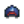
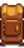
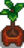
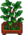
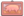

Prize Ticket
| Prize Ticket | |
| Bring this to the prize machine in Lewis' house for a special reward. | |
| Information | |
| Source | Quests • Special Orders |
| Sell Price | |
Prize Tickets are earned by completing Quests and Special Orders. It can also be obtained by opening the chest at the end of the Maze during Spirit's Eve, and repeated Egg Festival and Festival of Ice wins. One Prize Ticket can be bought at the Stardew Valley Fair for  1,000 star tokens each year. One can also be found in a box behind the stump above the Bookseller.
1,000 star tokens each year. One can also be found in a box behind the stump above the Bookseller.
Prize Tickets can be exchanged for prizes using the prize machine located in Lewis's house next to the Town Ledger. When using the prize machine, the player can see how many Prize Tickets they currently have as well as the next three prizes to be dispensed. Claiming a prize gives the player the first prize in line and advances the remaining prizes forward by one space.
Prizes
The possible contents for the first 22 prizes are pre-determined. For prize list numbers with multiple possible contents, only one will be chosen.[1]
| Prize List Number | Name | Description | Notes |
|---|---|---|---|
| 1 | Plant in the spring. Takes 3 days to grow. | Can obtain between Winter 21 and Spring 23 | |
| Plant in the summer. Takes 6 days to grow, and continues to produce after first harvest. | Can obtain between Spring 24 and Summer 20 | ||
| Plant in the fall. Takes 8 days to mature, and continues to produce after first harvest. | Can obtain between Summer 21 and Fall 20 | ||
| This special melon grows in the winter. Takes 7 days to grow. | Can obtain between Fall 21 and Winter 20 | ||
| 2 | Takes 28 days to produce a mature Peach tree. Bears fruit in the summer. Only grows if the 8 surrounding "tiles" are empty. | Reward chosen at random | |
| Takes 28 days to produce a mature Orange tree. Bears fruit in the summer. Only grows if the 8 surrounding "tiles" are empty. | |||
| 3 | There's a little bit of everything here. Plant them and see what grows! | Reward chosen at random | |
| An assortment of flower seeds. Plant them and see what grows! | |||
| 4 | A blacksmith can open this for you. Who knows what might be inside? | ||
| 5 | A very special gift that would delight anyone. | ||
| 6 | Blue Pinstripe Double Bed (1) | Given if the Farmhouse has been upgraded at least once | |
| Blue Pinstripe Bed (1) | Given if the Farmhouse has not been upgraded at all. Is automatically upgraded to the Blue Pinstripe Double Bed once the Farmhouse has been upgraded once. | ||
| 7 | Waters the 8 adjacent tiles every morning. | Reward chosen at random | |
| Turns vegetables into pickles and fruit into jam. | |||
| Grows mushrooms every so often. The more wild trees are nearby, the better it works. | |||
| 8 | Takes 28 days to produce a mature Apple tree. Bears fruit in the fall. Only grows if the 8 surrounding "tiles" are empty. | Reward chosen at random | |
| Takes 28 days to produce a mature Pomegranate tree. Bears fruit in the fall. Only grows if the 8 surrounding "tiles" are empty. | |||
| 9 | You become friends with people a little faster. | ||
| 10 | Generates a small explosion. Stand back! | Reward chosen at random | |
| Generates an explosion. Watch out! | |||
| Generates a powerful explosion. Use with extreme caution. | |||
| 11 |  Sports Cap (1) |
The cap has a vintage team logo on it. | |
| 12 | Place fish inside with a piece of coal to create smoked fish, which is worth double. The quality of the fish is preserved. | Reward chosen at random | |
 Dehydrator (1) |
Place 5 pieces of fruit or edible mushrooms inside to dry them. | ||
| 13 | A blacksmith can open this for you. These troves often contain ancient relics and curiosities. | Reward chosen at random | |
| A blacksmith can open this for you. Who knows what might be inside? | |||
| 14 |  House Plant (1) |
Can obtain one of three varieties | |
| 15 | Read this to gain some farming experience. | Reward chosen at random | |
| Read this to gain some fishing experience. | |||
| Read this to gain some mining experience. | |||
| Read this to gain some combat experience. | |||
| Read this to gain some foraging experience. | |||
| 16 | A very special gift that would delight anyone. | ||
| 17 | Cow Decal (1) | ||
| 18 | A blacksmith can break this open for you. These geodes contain a wide variety of minerals. | ||
| 19 | Place a fruit or vegetable in here. Eventually it will turn into a beverage. | Reward chosen at random | |
| Place outside and wait for delicious honey! (Except in Winter). | |||
| 20 | A rare and valuable gem. | ||
| 21 | A blacksmith can open this for you. Who knows what might be inside? | ||
| 22 | A rare and powerful candy infused with the essence of the prismatic shard. |
After obtaining the 22nd prize, subsequent prizes earned will cycle through 9 possible slots in the order listed below. As an example, Stardrop Tea will be rewarded as the 23rd, 32nd, 41st, and 50th prizes and every 9 prizes afterwards. For slots with multiple possible contents, only one will be chosen.[1]
| Slot | Name | Description | Notes |
|---|---|---|---|
| 1 | A very special gift that would delight anyone. | ||
| 2 | Wow, it's loaded with treasure! This is sure to fetch a good price. | ||
| 3 | Waters the 24 adjacent tiles every morning. | ||
| 4 |  Fancy House Plant (1) |
Can choose between one of three fancy house plant varieties, 25% chance to earn each | |
 Pig Painting (1) |
25% chance to earn | ||
| 5 | Generates an explosion. Watch out! | Reward chosen at random | |
| Generates a powerful explosion. Use with extreme caution. | |||
| 6 | A blacksmith can open this for you. Who knows what might be inside? | ||
| 7 | Sprinkle on kegs, furnaces, and other refining equipment to instantly receive their product. | Each possible quantity of Fairy Dust rewarded is equally likely | |
| 8 | A bar of pure iridium. | Reward chosen at random | |
| It's really spicy! Be careful. | |||
| It's more potent than regular coffee! | |||
| Crab, bread crumbs, and egg formed into patties then fried to a golden brown. | |||
| A blacksmith can open this for you. These troves often contain ancient relics and curiosities. | |||
| 9 | House Plant (1) | Can obtain one of three varieties |
Gifting
Prize Tickets cannot be given as gifts to villagers.
Bundles
One Prize Ticket is required for the  Helper's Bundle on the Bulletin Board (Remixed).
Helper's Bundle on the Bulletin Board (Remixed).
Tailoring
Prize Ticket is not used in any tailoring. It can be used in dyeing, serving as a red dye at the dye pots located in Emily's and Haley's house, 2 Willow Lane.
Quests
Prize Ticket is not used in any quests.